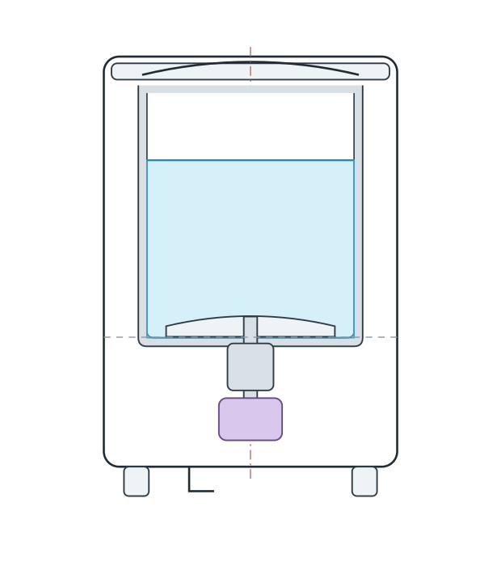
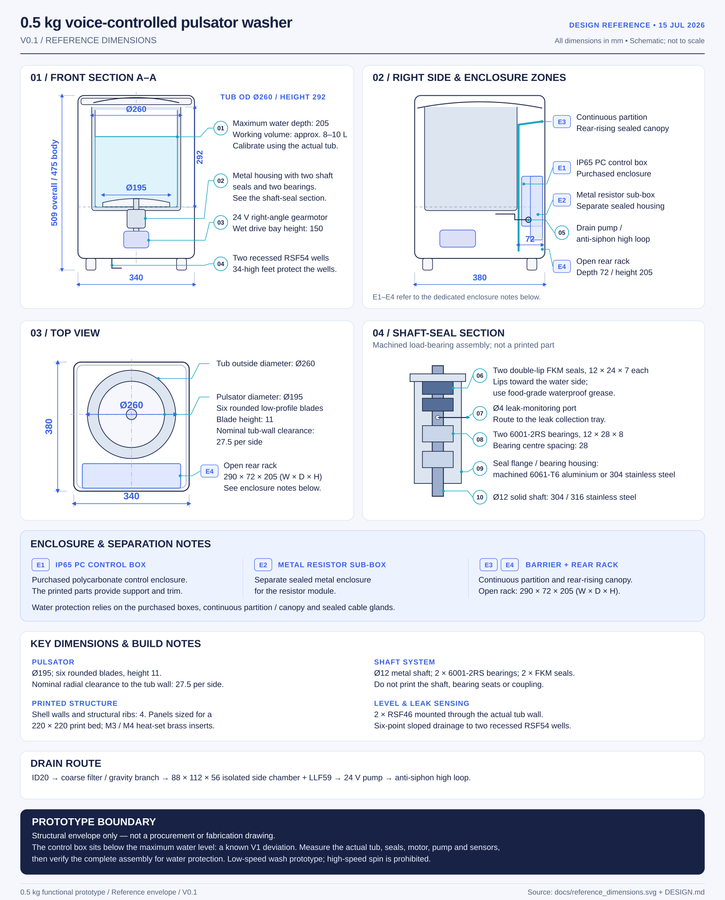

Say it.
“小洗衣机，暂停。”
Offline Chinese speech-recognition and spoken-feedback adapters. Recognised requests pass through a defined command vocabulary before reaching the controller.
Physical computing / An everyday experiment
Could a washer listen
and know when to wait?
A compact washer design connecting offline Chinese voice commands, physical controls, and an understandable wash sequence. An exploration of what happens when an interface becomes an object.
In progress · Design + software simulation

01 / The question
Starting a wash sounds like one action. Inside the machine, it is a sequence of decisions: choose a programme, check the lid, wait for enough water, begin moving, and respond when something changes.
This project explores a small, manually filled washer with low-speed pulsator washing. The design brings those hidden states into the interaction, so a request can lead to a clear next step.
The first version focuses on washing and draining. High-speed spinning and heating are outside its scope.
02 / Three ways in
Different inputs.
One consistent control sequence.
“小洗衣机，暂停。”
Offline Chinese speech-recognition and spoken-feedback adapters. Recognised requests pass through a defined command vocabulary before reaching the controller.
Start. Pause. Choose.
Stop.
Physical-button inputs provide a direct way to control the same sequence. Hardware emergency stopping is designed as an independent path.
What’s happening?
What comes next?
A local web interface shows the current state and accepts commands. Its simulated flow includes waiting for water, pausing, continuing, and stopping.
The interaction logic
Voice, buttons, and the web interface feed the same controlled sequence. A start request leads to checks and a prompt to add water. Movement depends on water level, a closed lid, and the required safety permissions.
The design separates interaction from real-time control: a Raspberry Pi handles voice and the programme flow; an ESP32 handles sensors, motor commands, and local protective logic. Fault recovery requires new checks rather than automatically repeating an old action.
Request a wash programme.
Check conditions and add water.
Low-speed forward–stop–reverse.
Drain, or refill for rinsing.
03 / From interface to object
Parametric CAD and a mechanical design package.
Dimensions remain subject to physical
verification.

The enclosure and locating parts are designed in OpenSCAD. The tub, shaft, bearings, and seals rely on purchased or machined components. Actual part measurements must be checked before the assembly is finalised.
04 / Work in progress
The project review dated 6 September 2026 records a browser demonstration of the simulated controls. Hardware validation remains incomplete; the review does not report an assembled or tested washing machine.